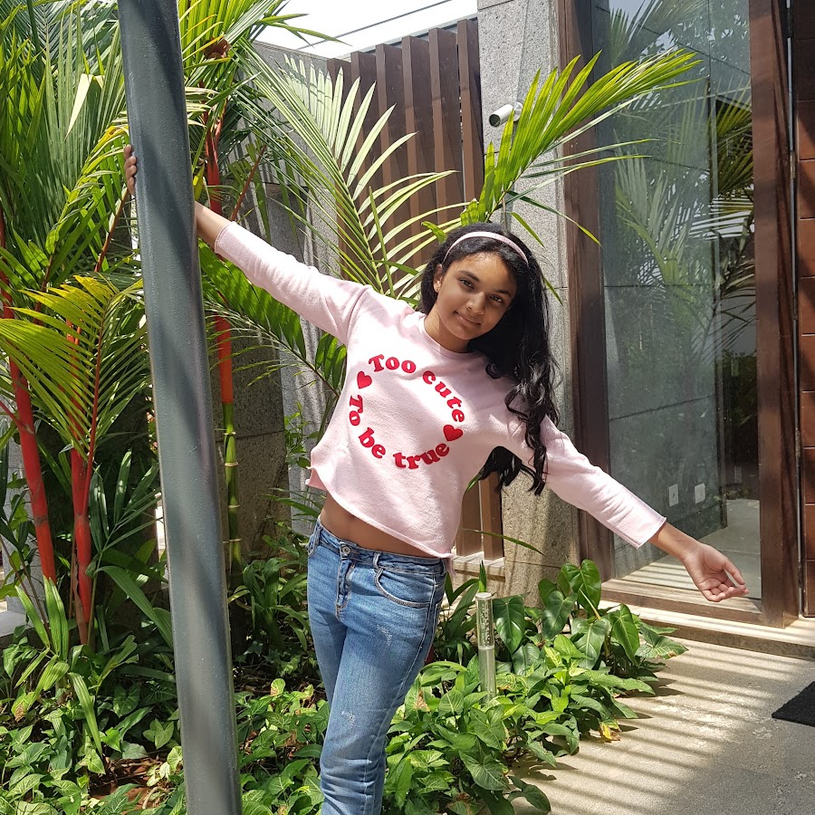

Blog
Blog & Videos
Articles, reflections, and videos on LinkedIn and YouTube.
The Problem I Didn’t Know Existed
“I thought I was solving a problem of visualising mathematics.”
What began with geometry and helping her father led Ananya to investigate access to mathematics education for visually impaired students. She writes about visits to schools, work with Mitra Jyothi, Braille proofreading, and building tools to support the process.
Read on LinkedIn ↗YouTube
Ananya’s Artopia

Visit YouTube channel ↗